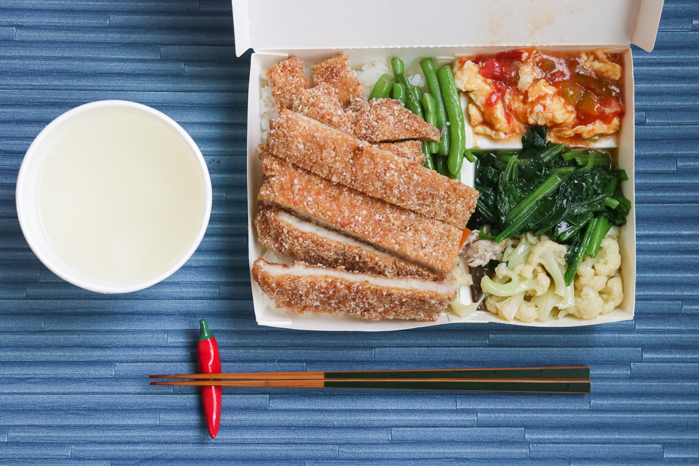

第二頁「一碗不夠是嗎？我這次再給你盛多一點！」老闆很熱誠地回應。男孩:「不是的，我要拿回去裝在便當盒裡，明天帶到學校當午餐！」老闆聽了，在心裡猜想，男孩可能來自南部鄉下經濟環境不是很好的家庭，為了不肯放棄讀書的機會，獨自一人北上求學，甚至可能半工半讀，處境的困難可想而知；於是，悄悄在餐盒的底部先放入店裡招牌的肉燥一大匙，還加了一粒魯蛋，最後才將白飯滿滿覆蓋上去，乍看之下，以為就只是白飯而已。老闆娘見狀，明白老闆想幫助那名男孩，但卻搞不懂，為什麼不將肉燥大大方方地加在飯上，卻要藏在飯底？老闆貼著老闆娘的耳說：「男孩若是一眼就見到白飯加料，說不定會認為我們是在施捨他，這不等於直接傷害了他的自尊嗎？這樣，他下次一定不好意思再來。如果轉到別家一直只是吃白飯，怎麼有體力讀書呢？」「你真是好人，幫了人還替對方保留面子！」「我不好，妳會願意嫁給我嗎？」  上一頁下一頁目錄 |